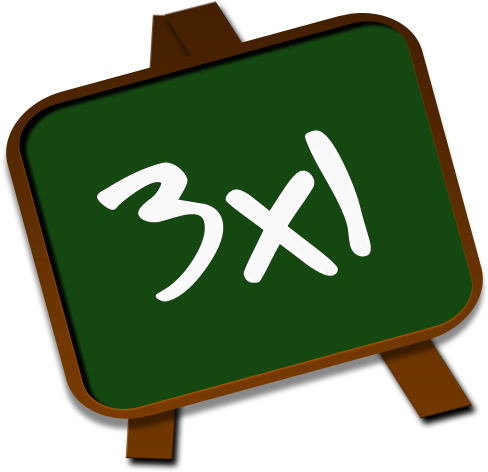

Matemáticas Básicas: MultiplicaciónConceptos, métodos, ejemplos y ejercicios para multiplicar correctamente |
|||||||||
| Inicio | Números | Suma | Resta | Multiplicación | División | Trigonometria | Geometría | Álgebra | Contacto | |||||||||
Cómo usar esta página
Consejos rápidos
CuriosidadLa multiplicación es la base de operaciones más complejas como potencia y factorial; muchas calculadoras usan algoritmos optimizados para producir productos muy grandes rápidamente. |
¿Qué es la multiplicación?La multiplicación es una operación que representa la suma repetida de un mismo número. Por ejemplo, 4 × 3 significa sumar 4 tres veces: 4 + 4 + 4 = 12. Terminología
Propiedades
Métodos para multiplicarMultiplicación como suma repetidaEj.: 3 × 4 = 3 + 3 + 3 + 3 = 12. Método en columna (productos parciales)Se multiplican las cifras del multiplicando por cada cifra del multiplicador y luego se suman los productos parciales, alineando por posición. Ejemplos prácticos
Multiplicación con decimalesMultiplica como si fuesen enteros y luego coloca la coma decimal en el producto con el número de decimales igual a la suma de decimales de los factores. Ej.: 1.2 × 0.5 → multiplicas 12 × 5 = 60; suma de decimales = 2 → resultado = 0.60 = 0.6. Multiplicación con negativos
Errores comunes
Aplicaciones
EjerciciosBásicos
Intermedios
Soluciones
|
||||||||
|
© 2025 Matemáticas Básicas | Proyecto educativo en HTML puro |
|||||||||